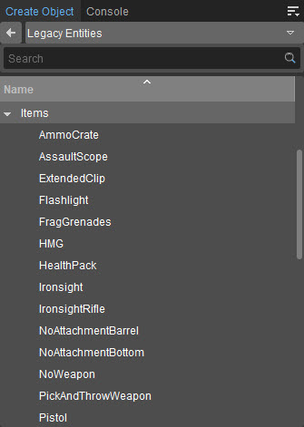

Обзор
Сущности предметов — это объекты оружия и снаряжения, которые игрок или враг могут подобрать и использовать. Они основаны на игровых скриптах и чтобы добавить больше предметов, нужно писать новые скрипты.
Сущности элемента можно найти в Создать объект → Устаревшие объекты → Предметы
Свойства предмета
Свойства объектов Item Entities одинаковы. 
Недвижимость | Описание |
|---|---|
AutoPickup | DEPRECATED - Укажите, должен ли объект подбираться автоматически, если игрок проходит по объекту. |
HitPoints | Определяет хитпойнты или здоровье объекта. |
initialSetup | Определяет параметры начальной настройки. |
установлен | Указывает, установлен ли пистолет. |
Физика | Указывает, применяется ли физика к объекту. Нет, Жесткий и Статический доступны. |
выбираемый | Указывает, можно ли подобрать объект. |
SmartObjectClass | Указывает тип смарт-объекта объекта. |
SpecialSelect | Оружие будет воспроизводить альтернативную анимацию выбора, когда вы берете его в руки в первый раз. |
Полезный | Указывает, можно ли использовать объект. |
Возрождение | |
Возрождение | Указывает, будет ли объект возрождаться после уничтожения или поднятия. |
Таймер | Определяет время в секундах, необходимое объекту для возрождения после поднятия. |
Уникальный | Указывает, является ли объект уникальным. |
AmmoCrate
Объект «Ящик с боеприпасами» можно использовать для пополнения боеприпасов определенных категорий. Имеет дополнительный функционал для ограниченного количества использований и возможности давать гранаты.
Здесь есть версия этой сущности, специфичная для многопользовательской игры: AmmoCrateMP
Недвижимость | Описание |
|---|---|
Боеприпасы0-4Перезарядка | Модель будет использоваться на разных этапах использования. Обычно при использовании в коробке становится меньше боеприпасов. |
BoxModel | Модель, которая будет использоваться для коробки, в которой находятся боеприпасы. |
numOfRecharges | Сколько видов использования разрешено для этой сущности. |
Годный к употреблению | |
UseMessage | |
Боеприпасы | |
AmmoCategory | Каждый скрипт боеприпасов должен определить "ammo_category", частью которого он должен быть. Чаще всего используется «Обычный». |
FragGrenades | Сколько осколочных гранат давать на использование. |